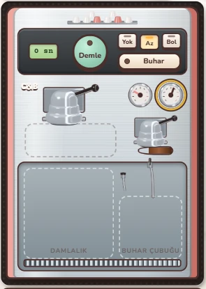
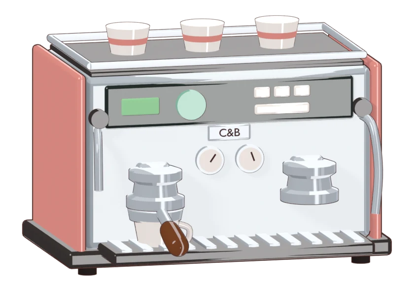
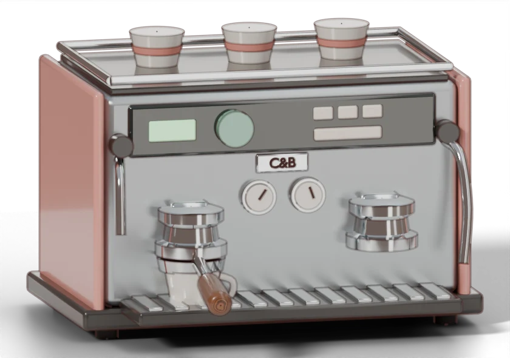
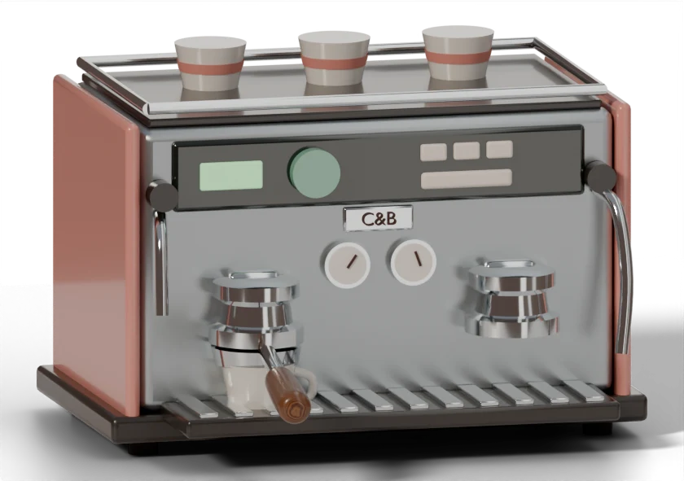

Tarz denemesi: espresso makinesi (#16)
Aynı model, üç farklı görünüm. Bir tanesini seç; seçilen ayarlar bütün kafeye (#17) uygulanacak. Küçük resim, makinenin telefonda oyunda görüneceği boyuta yakın.
Şu an Oyundaki makine

- CSS ile çizilmiş gövde, Blender'dan birkaç parça (grup başlığı, ısıtıcı).
- Düz, karton gibi; parçalar birbirine tam oturmuyor.
A Yumuşak toon

oyundaki boyutta
- Şimdiki modellerin tarzı: renk bantlarıyla gölge, ince kahverengi çizgi.
- En okunaklı, en "çizgi film". Çelik ve krom daha düz.
- Hızlı render (EEVEE).
B Gerçek malzeme + ince çizgi

oyundaki boyutta
- Fırçalanmış çelik, krom, emaye, ceviz; yumuşak stüdyo ışığı, alttaki gölge.
- İnce, yumuşak kahverengi çizgi okunaklılığı koruyor.
- Cycles (GPU) ile render.
C Gerçek malzeme, çizgisiz

oyundaki boyutta
- B ile aynı malzemeler, çizgi yok.
- Daha sıcak ışık, biraz daha canlı renkler.
- En gerçekçi; küçükken kenarlar biraz kaybolabilir.